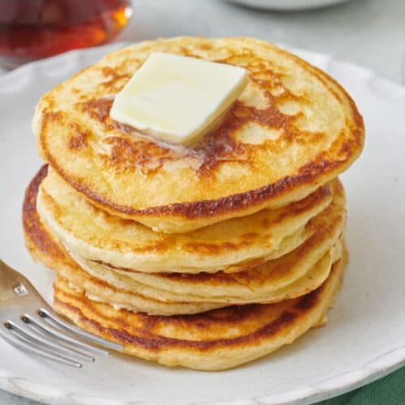

Fluffy American Pancakes
Ingredients:
- 1.5 (386g) cups milk
- 1 egg
- 2 cups (300g) all-purpose flour
- 1/4 cup (62g) granulated sugar
- 1 tsp (4g) salt
- 1/4 tsp (1g) baking soda
- 1 Tbsp (12g) baking powder
- 2 (21g) Tbsp melted butter

Instructions:
- In a small bowl, whisk together egg and milk.
-
In a separate bowl, whisk and combine all-purpose flour
with granulated sugar, salt, baking soda, and baking
powder.
-
Mix the dry ingredients with the wet ingredients while
constantly whisking.
-
While whisking add in melted unsalted butter. Whisk
until combined. Rest for 5 minutes.
-
Preheat a nonstick skillet over medium. Spray with spray
oil or unsalted butter.
-
Once hot spoon ¼” dollops of the pancake batter. Cook
for 2-3 minutes or until golden brown on the bottom.
-
Flip and cook for an additional 2-3 minutes. Repeat with
the rest of the batter.
-
Top with butter and drizzle with maple syrup to serve.